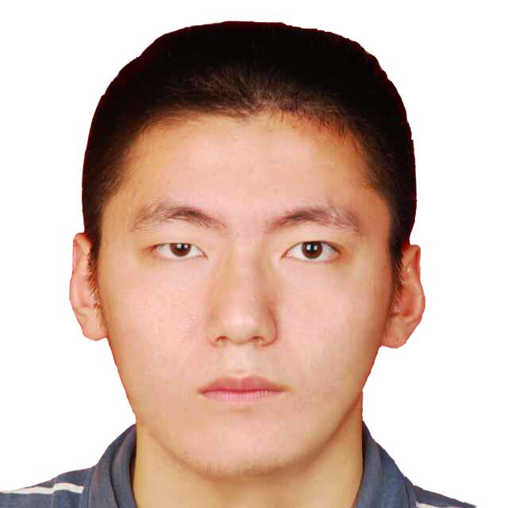

|  | Siwei Wang(王 思 为) |
Journals:
[6] Q. Zhang, Q. Yuan, J. Li, F. Sun, and L. Zhang, “Deep spatio-spectral Bayesian posterior for hyperspectral image non-i.i.d. noise removal,” ISPRS Journal of Photogrammetry and Remote Sensing (ISPRS P&RS), vol. 164, pp. 125-137, 2020. (SCI Q1 Top, IF=7.319) [PDF] [Dataset] [BibTex]
[5] Q. Zhang, Q. Yuan, J. Li, Z. Li, H. Shen, and L. Zhang, “Thick cloud and cloud shadow removal in multitemporal images using progressively spatio-temporal patch group deep learning,” ISPRS Journal of Photogrammetry and Remote Sensing (ISPRS P&RS), vol. 162, pp. 148-160, 2020. (SCI Q1 Top, IF=7.319) [PDF] [Code] [Dataset] [BibTex]
[4] Q. Zhang, Q. Yuan, J. Li, X. Liu, H. Shen, and L. Zhang, “Hybrid noise removal in hyperspectral imagery with spatial-spectral gradient network,” IEEE Transactions on Geoscience and Remote Sensing (TGRS), vol. 57, no. 10, pp. 7317-7329, 2019. (SCI Q1 Top, IF=5.855) [PDF] [Dataset] [BibTex]
[3] Q. Zhang, Q. Yuan, C. Zeng, X. Li, and Y. Wei, “Missing data reconstruction in remote sensing image with a unified spatial-temporal-spectral deep convolutional neural network,” IEEE Transactions on Geoscience and Remote Sensing (TGRS), vol. 56, no. 8, pp. 4274-4288, 2018. (SCI Q1 Top, IF=5.855, ESI Highly Cited Paper) [PDF] [Code] [BibTex]
[2] Q. Zhang, Q. Yuan, J. Li, Z. Yang, and X. Ma, “Learning a dilated residual network for SAR image despeckling,” Remote Sensing (RS), vol. 10, no. 2, 196, 2018. (SCI Q2, IF=4.509) [PDF] [BibTex]
[1] Q. Yuan, Q. Zhang, J. Li, H. Shen, and L. Zhang, “Hyperspectral image denoising employing a spatial-spectral deep residual convolutional neural network,” IEEE Transactions on Geoscience and Remote Sensing (TGRS), vol. 57, no. 2, pp. 1205-1218, 2019. (SCI Q1 Top, IF=5.855, ESI Highly Cited Paper) [PDF] [Code] [Dataset] [BibTex]
Conferences:
[1] S. Wang, Liu, X., Zhu, E., Tang, C., Liu, J., Hu, J., Yin, J., “Multi-view Clustering via Late Fusion Alignment Maximization,” IJCAI2019 (pp. 3778-3784). (IJCAI), (CCF-A, Oral) [pdf] [code]
Membership:
Journal Reviewer:
Conference Reviewer: